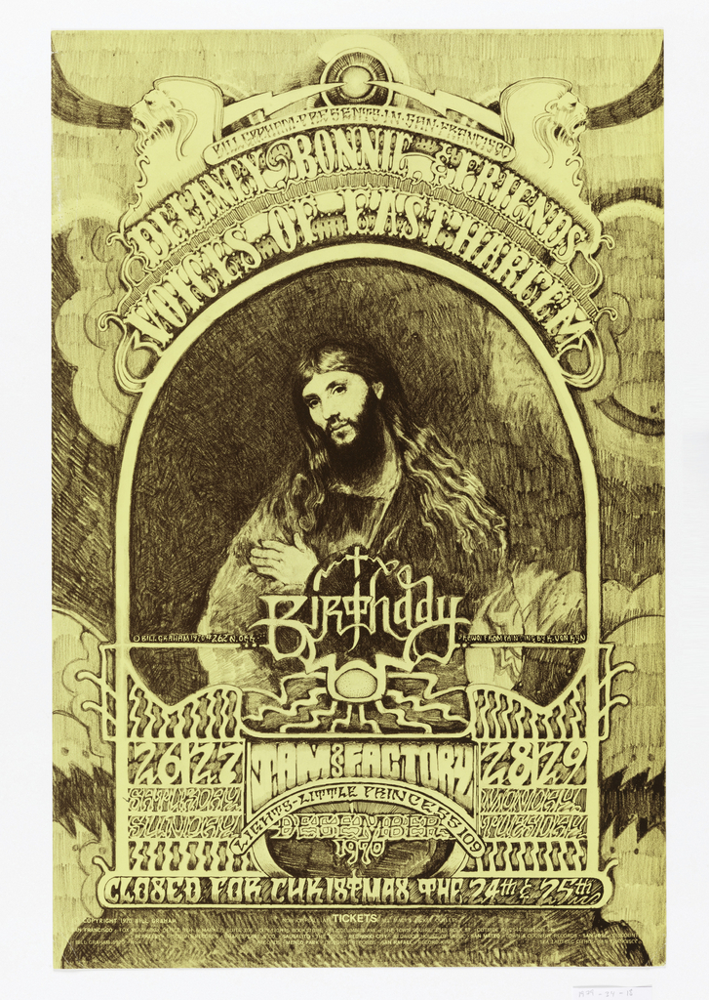

Let me first preface that I did not take any photos in the museum because it didn't seem proper to do so. If further proof is needed that I attended, I'd be happy to provide it.
I really enjoyed two of the pieces dedicated to music.
First is the poster for the Fillmore in San Francisco by Bill Graham. I don't think that designers nor artists should shy away from religious symbolism. In this case, it's very tastefully done and I really like the fact that Christmas is being referred to as a birthday. So, when the venue is closed on that dayit seems to imply that it has a cosmic significance, which is really fitting for the time and place. Hippies have always approached life on a cosmic level and so it suits the needs of the pretty epic marketing.

Second is the album art for Benedikt Frey by Mario Hugo. Frey seems to have a pretty industrial techno sound which may illicit a lot of daydreaming. So, Hugo's cover covers the feeling perfectly in that it truly feels like we're gazing upon 3-dimensional space. This kind of visual aesthetic has always drawn me whenever I take photos or render 3D graphics.
Both of these were on display now at the Cooper Hewitt in Manhattan on 12/4/17